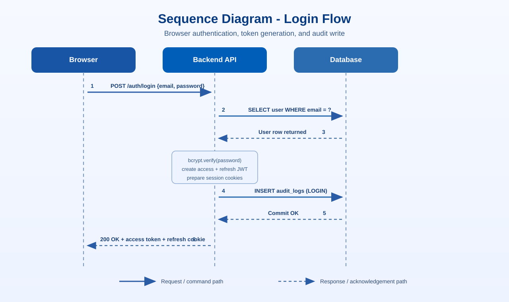

Authentication & Security
Section 1 of 12 · Back to Implementation
Libraries Used
| Library | Purpose |
|---|---|
python-jose / PyJWT | JWT encoding, decoding, and verification |
passlib[bcrypt] | Password hashing and verification using bcrypt |
fastapi.security.OAuth2PasswordBearer | Extracts Bearer token from Authorization header |
python-multipart | Parses OAuth2 form data |
Overview
Authentication is layered across hashing, token issuance, and request-time validation. Passwords are hashed with bcrypt via shared helpers, access tokens are short-lived, and refresh tokens live in HttpOnly cookies so sessions can renew without exposing secrets to JavaScript. Each request resolves a user from the token and checks session_version and account status so revocations take effect immediately.
The HTTP boundary adds rate limiting, security headers, and strict CORS rules to reduce brute-force and browser-side risk while keeping login and refresh practical for clinicians. This layered design minimizes replay and CSRF exposure and avoids policy drift across endpoints by enforcing one consistent security path.
Password Hashing
Passwords are never stored in plain text. passlib uses bcrypt with an automatically managed cost factor. Password strength is validated before hashing — minimum 8 characters, must contain uppercase, lowercase, digit, and special character.
Registration and password-change flows call shared helper functions that delegate hashing and verification to one CryptContext instance, enforcing one consistent algorithm and policy across all auth paths instead of risking weaker, duplicated implementations.
# backend/src/core/security.py
from passlib.context import CryptContext
pwd_context = CryptContext(schemes=["bcrypt"], deprecated="auto")
def get_password_hash(password: str) -> str:
return pwd_context.hash(password)
def verify_password(plain_password: str, hashed_password: str) -> bool:
return pwd_context.verify(plain_password, hashed_password)JWT Token Creation
The system issues two tokens: an access token (short-lived, used on every API call) and a refresh token (long-lived, stored in an HttpOnly cookie). Both embed sub, role, sv (session version), and exp.
The session_version field allows immediate token revocation — incrementing it in the database invalidates all previously issued tokens without a blocklist.
Token builders pull only essential claims from the current user row and sign the payload with configured expiry windows, keeping tokens small while still supporting RBAC checks and instant logout invalidation.
# backend/src/core/security.py
def create_access_token_for_user(user: User) -> str:
return create_access_token({
"sub": user.email,
"role": user.role.value,
"sv": user.session_version, # session version for forced logout
})
This snippet is intentionally minimal but important: sub identifies the account, role lets the API enforce role-aware access without an extra lookup for every guard, and sv makes mass token revocation possible through one database field increment.
The session_version field (sv) is an integer stored on the User row and embedded in every issued token. On logout or password reset, the backend increments user.session_version in the database. Every subsequent token validation reads the live value and compares it against the sv claim in the presented token — a mismatch causes the token to be rejected immediately with a credentials exception, even if the token has not yet reached its exp timestamp. This is preferable to a token blocklist for two reasons: the blocklist approach requires a persistent store that grows with every revoked token and must be consulted on every request, whereas session version is a single integer read in the same user lookup that is already required for access checks. It also handles bulk revocation naturally — invalidating all active sessions for a user requires one database write, not inserting a record per outstanding token.
Token Decoding & Verification
Incoming access tokens are decoded and then validated against live account state. Verification checks user existence, active status, and session version so stale tokens are rejected even before expiry.
The resolver decodes the JWT, validates payload structure/type, and then performs a live user lookup before authorizing the request, combining cryptographic checks with database state to block access for deactivated users and revoked sessions even when token signatures remain valid.
# backend/src/core/security.py
def _resolve_user_from_token(db: Session, token: str, *, expected_type: str) -> User:
"""Decode JWT, look up user, verify active status and session version."""
try:
payload = _decode_token_payload(token)
email, session_version = _validate_payload(payload, expected_type=expected_type)
except JWTError as exc:
raise _credentials_exception() from exc
user = db.query(User).filter(User.email == email).first()
if not user:
raise _credentials_exception()
if not user.is_active:
raise HTTPException(status_code=403, detail="Account deactivated")
# Reject token if session version has been incremented (forced logout)
if session_version is not None and user.session_version != session_version:
raise _credentials_exception()
return userThe critical behavior here is "JWT + live database state" validation. Even a cryptographically valid token is rejected if the account is deactivated or if session version drift indicates forced logout.
FastAPI Dependency Injection
FastAPI's Depends mechanism injects the authenticated user into any protected route. Role guards are built on top:
A single dependency function resolves credentials from header/cookie and returns a validated User object for downstream handlers, avoiding copy-pasted auth logic and ensuring every protected endpoint follows the same trust rules.
# backend/src/core/security.py
oauth2_scheme = OAuth2PasswordBearer(tokenUrl="/auth/login", auto_error=False)
def get_current_user_from_cookie_or_header(
request: Request,
db: Session = Depends(get_db),
bearer_token: str | None = Depends(oauth2_scheme),
) -> User:
# Enforce Bearer header for mutation requests (CSRF mitigation)
_enforce_bearer_header_for_unsafe_cookie_auth(request, bearer_token)
token = bearer_token or request.cookies.get(settings.ACCESS_COOKIE_NAME)
if not token:
raise _credentials_exception()
return _resolve_user_from_token(db, token, expected_type="access")Header-first resolution is deliberate. For unsafe HTTP methods, the guard requires a Bearer header even when cookies exist, reducing CSRF risk for cookie-authenticated browser traffic.
Auth Cookies
On login, both tokens are sent — access token in the JSON body and refresh token as an HttpOnly cookie:
Cookie attributes are assembled once and reused for both access and refresh cookies in the same helper, preventing attribute drift (for example missing HttpOnly or wrong SameSite) that can either break refresh behavior or weaken browser-side protections.
def set_auth_cookies(response: Response, *, access_token: str, refresh_token: str) -> None:
cookie_common: dict[str, Any] = {
"httponly": True,
"secure": settings.COOKIE_SECURE,
"samesite": settings.COOKIE_SAMESITE,
"path": "/",
}
response.set_cookie(
key=settings.ACCESS_COOKIE_NAME,
value=access_token,
max_age=settings.ACCESS_TOKEN_EXPIRE_MINUTES * 60,
**cookie_common,
)
response.set_cookie(
key=settings.REFRESH_COOKIE_NAME,
value=refresh_token,
max_age=settings.REFRESH_TOKEN_EXPIRE_DAYS * 24 * 60 * 60,
**cookie_common,
)HttpOnly blocks JavaScript token reads, secure restricts transmission to HTTPS, and samesite controls cross-site send behavior. Access tokens use a shorter lifetime than refresh tokens to reduce replay window if interception ever occurs.
Sequence Diagram — Login Flow

Rate Limiting
Auth endpoints are rate-limited with a dual-layer approach — Redis as primary, with an in-process defaultdict fallback when Redis is unavailable. This protects reset and verification endpoints from abuse without depending on Redis uptime for core availability.
Each request checks a scoped key against Redis counters first, then falls back to a local sliding window list when Redis is down, keeping brute-force protections active during infrastructure incidents instead of silently failing open.
# backend/src/services/auth_service.py
def _is_rate_limited(redis_key, attempts_store, *, window_seconds, max_attempts) -> bool:
redis_limited = _redis_rate_limited(redis_key, window_seconds, max_attempts)
if redis_limited:
return True
now = datetime.now(timezone.utc)
cutoff = now - timedelta(seconds=window_seconds)
attempts_store[redis_key] = [t for t in attempts_store[redis_key] if t > cutoff]
if len(attempts_store[redis_key]) >= max_attempts:
return True
attempts_store[redis_key].append(now)
return False| Endpoint | Window | Max Attempts |
|---|---|---|
POST /auth/forgot-password | 900 s (15 min) | 5 |
POST /auth/resend-verification | 900 s (15 min) | 5 |
General API rate limiting also uses scoped buckets. Keys include endpoint scope, subject identity (hashed token/email or anonymous marker), and client IP. That separation means heavy traffic on one scope (for example login attempts) does not throttle unrelated scopes such as authenticated chat requests from the same network.
When limits are exceeded, endpoints return 429 Too Many Requests with cooldown guidance, without revealing account existence.
The window and attempt values balance legitimate use against abuse risk on these specific endpoints. A 15-minute window with 5 maximum attempts for /auth/forgot-password means a user who accidentally submits the form repeatedly can still succeed within a normal interaction, but an attacker systematically probing valid email addresses is limited to 5 requests per 15-minute window per key. For /auth/resend-verification, the same 5-attempt limit prevents a denial-of-service pattern where an attacker floods a newly registered user's inbox by repeatedly triggering verification emails. These limits are intentionally permissive enough not to lock out genuine users who click resend a few times while strict enough to neutralize automated abuse at these sensitive pre-authentication endpoints.
Email Verification & Password Reset Flows
Email verification and password reset are implemented as one-time token workflows. On registration, accounts are created active but with email_verified=false, and a verification token is issued. Verification state is stored for audit and policy use.
The forgot-password endpoint is enumeration-safe: registered and unregistered emails receive the same HTTP 200 response shape and generic message. Attackers cannot infer account existence from response differences.
Both token types are secure random values, stored as SHA-256 hashes (not plaintext, not JWT), and compared using constant-time digest checks.
The server generates high-entropy tokens, hashes them with a server-side pepper, and verifies with constant-time comparison on redemption, so plaintext reset links are not recoverable even if token rows leak and timing side-channel exposure is reduced.
def generate_secure_token() -> str:
return secrets.token_urlsafe(32) # 256 bits of randomness
def _hash_token(token: str, pepper: str) -> str:
payload = f"{pepper}:{token}".encode("utf-8")
return hashlib.sha256(payload).hexdigest()
def verify_password_reset_token(token: str, token_hash: str) -> bool:
# Uses hmac.compare_digest to prevent timing attacks
return hmac.compare_digest(
_hash_token(token, settings.PASSWORD_RESET_TOKEN_PEPPER),
token_hash,
)Profile Management
Users can update profile fields via PATCH /auth/profile, including secure password changes. When a password is changed, the current password must be supplied and the new value must pass the same strength policy used during registration.
A partial-update schema makes fields optional but keeps password-change inputs explicit in the same contract, letting safe profile edits stay flexible while preventing accidental or unauthorized password mutation without current-credential proof.
# backend/src/schemas/auth.py
class ProfileUpdate(BaseModel):
full_name: str | None = None
specialty: str | None = None # specialists only
new_password: str | None = None
current_password: str | None = None # required when changing passwordNginx Reverse Proxy
Nginx handles TLS termination, HTTP→HTTPS redirection, and request proxying. It is the only container with a public-facing port.
Stream routes and standard API routes are separated so SSE-specific proxy behavior can be applied only where required, preserving real-time token delivery while leaving normal API traffic on safer default buffering behavior.
# nginx/nginx.conf
# SSE requires buffering disabled — otherwise Nginx holds chunks until buffer fills
location /api/chats/ {
proxy_pass http://backend:8000;
proxy_buffering off;
proxy_read_timeout 300s;
proxy_set_header X-Real-IP $remote_addr;
}
location /api/ {
proxy_pass http://backend:8000;
}
# Frontend SPA — serve index.html for all unmatched routes (client-side routing)
location / {
proxy_pass http://frontend:3000;
try_files $uri $uri/ /index.html;
}HTTP Security Headers Middleware
A custom Starlette middleware class applies security headers to every response. This runs before any route handler and cannot be bypassed by individual endpoints:
The middleware mutates response headers in one central place on the outbound path of every request, which guarantees baseline browser hardening across the whole API and avoids per-endpoint omissions.
# backend/src/middleware/security.py
class SecurityHeadersMiddleware(BaseHTTPMiddleware):
async def dispatch(self, request: Request, call_next):
response = await call_next(request)
response.headers["X-Content-Type-Options"] = "nosniff"
response.headers["X-Frame-Options"] = "DENY"
response.headers["X-XSS-Protection"] = "1; mode=block"
response.headers["Referrer-Policy"] = "strict-origin-when-cross-origin"
response.headers["Permissions-Policy"] = "camera=(), microphone=(), geolocation=()"
response.headers["Content-Security-Policy"] = (
"default-src 'self'; script-src 'self' 'unsafe-inline'; "
"style-src 'self' 'unsafe-inline'; img-src 'self' data:; "
"connect-src 'self'"
)
return responseFile Upload Validation
File uploads pass a multi-layer validation pipeline before bytes are committed. Each layer blocks a different class of risk rather than relying on extension checks alone.
| Validation layer | Risk addressed |
|---|---|
| Extension allow-list | Rejects unsupported file classes early. |
| Magic-byte signature check | Blocks content-type confusion (e.g., script renamed as .pdf). |
| Binary-content heuristic | Prevents non-text payloads masquerading as text uploads. |
| Filename sanitization | Prevents path traversal and unsafe filesystem names. |
| Streamed size cap | Stops oversized payloads and deletes partial files. |
Signature checks inspect the first bytes of the payload (for example %PDF- for PDFs and PK\x03\x04 for DOCX) to confirm the declared extension matches content. Text formats also use a binary-byte ratio heuristic to reject likely binary masquerades.
Each validation layer targets a different attack vector. The extension allow-list catches files with completely unsupported types early and cheaply, before any bytes are read beyond the filename. The magic-byte signature check addresses a more targeted attack: a file with a renamed extension, for example an executable or script saved as .pdf. The filename extension is user-controlled and trivially spoofed; the magic bytes are not, because they are part of the file's binary content. The binary-content heuristic catches edge cases that signature checks miss — specifically encrypted or password-protected PDFs, which have valid magic bytes but produce only garbled binary content when read as text. Without the heuristic, pdfplumber would attempt to parse such a file during text extraction and could hang or raise an unrecoverable exception, blocking the upload thread. Filename sanitization prevents path traversal attacks where a crafted filename such as ../../etc/passwd could cause the write path to escape the intended upload directory. The streamed size cap ensures oversized uploads are rejected before the full payload reaches memory, protecting against denial-of-service via large file submissions.
Application Startup Maintenance
During FastAPI lifespan startup, the backend runs maintenance before accepting requests. Two tasks are critical.
First, expired email-verification and password-reset tokens are purged (older than retention policy) to reduce table growth and stale-token surface area.
Second, stale messages.is_generating=true rows from unclean shutdowns are reset to a recoverable state with an interruption message. This prevents permanent UI spinners and specialist-review deadlocks after restarts.
Both tasks are wrapped defensively so maintenance failures do not hard-block service boot.
CORS Configuration
CORS is configured with explicit origin allow-lists and allow_credentials=True so browsers can send HttpOnly refresh-token cookies for session refresh operations.
The application wires CORS middleware with settings-driven origins, methods, and headers during startup, avoiding hardcoded policies and keeping browser auth behavior predictable between local and deployed setups.
# backend/src/app/main.py
app.add_middleware(
CORSMiddleware,
allow_origins=settings.ALLOWED_ORIGINS,
allow_credentials=True,
allow_methods=settings.CORS_ALLOW_METHODS,
allow_headers=settings.CORS_ALLOW_HEADERS,
)Allowed origins and headers are defined explicitly in config and loaded once into runtime settings, because credentialed cookie flows require explicit origin matching and clear allow-lists are both a security control and an operational requirement.
# backend/src/core/config.py
ALLOWED_ORIGINS = ["http://localhost:5173", "http://localhost:3000"]
CORS_ALLOW_METHODS = ["GET", "POST", "PATCH", "DELETE", "OPTIONS"]
CORS_ALLOW_HEADERS = ["Authorization", "Content-Type", "Idempotency-Key"]Wildcard origins are intentionally disallowed: browser CORS rules prohibit Access-Control-Allow-Origin: * when credentials are included. Explicit origins are therefore mandatory for cookie-based auth to work reliably.